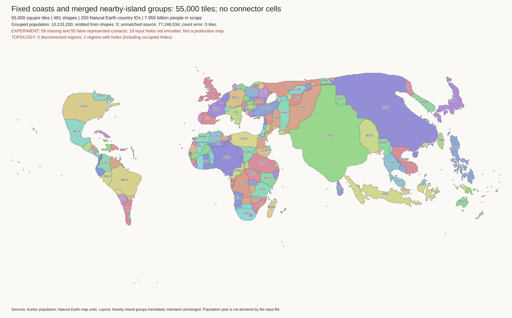
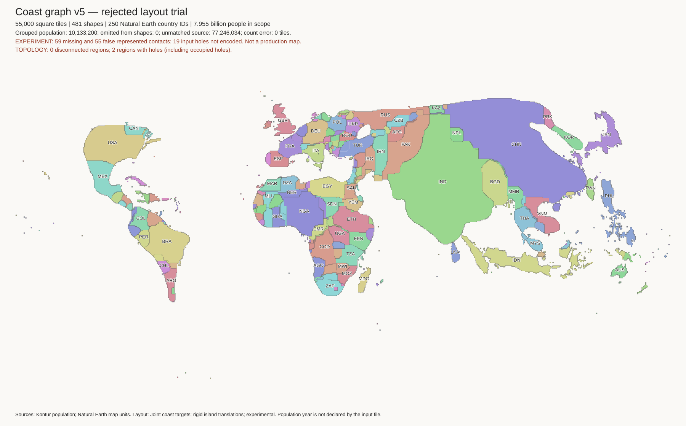

None of these six candidates is approved as a replacement. The published map is unchanged.
Each trial keeps 55,000 tiles and the existing shapes and contacts. Ireland moves north, but other island relationships become worse. Lower axis-error counts are not sufficient.
Work log · Source coast checks · Check settings and limits
| Trial | Change | Images |
|---|---|---|
| v1 | Several coast and centre targets | World · Europe · Indonesia · Japan |
| v2 | Keep selected source centre orders | World · Europe · Indonesia · Japan |
| v3 | Retain larger regional anchors | World · Europe · Indonesia · Japan |
| v4 | Remove whole-body centre targets | World · Europe · Indonesia · Japan |
| v5 | Use component coast frames | World · Europe · Indonesia · Japan |
| v6 | Use existing transport for coast positions | World · Europe · Indonesia · Japan |


The existing mainland water problems remain. These trials only translate islands. The next mainland experiment must change the land footprint, not add thin connector paths.